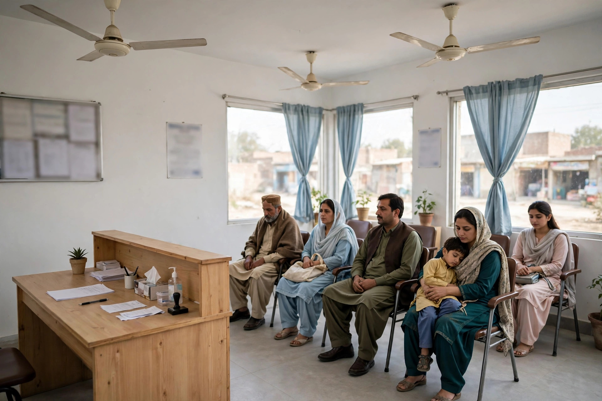

A person searching for a clinic, a laboratory test or a pharmacy in Mianwali is often worried, in pain, or helping a family member. They do not want clever marketing. They want to know who is open, where the place is, whether the right service is offered, and how to call. SEO for health services is therefore mostly about clarity, accuracy and trust, presented in the order a patient needs it.
Mianwali has many private clinics, doctors, labs and pharmacies, and patients compare them along with options in bigger cities for some needs. A well-kept online presence helps the right patients find the right service locally, and helps your staff too, because fewer calls are spent answering questions that a clear page could have answered.
Put Urgent Information First on Every Page
Your phone number, timings and address should be visible without scrolling through long introductions, especially on a phone. State how appointments work, whether walk-in patients are seen, and what someone should do outside normal hours if you offer guidance for that situation. If a doctor sits only on certain days, say so plainly and keep that information current.
Each main service deserves its own clear description. A lab, for example, can explain which broad types of tests it handles, how reports are collected, and what patients should ask when booking. A pharmacy can explain its opening hours and how to check availability of a medicine by phone. Avoid copying supplier or textbook text; write for a local patient who needs to act today.

Use Your Google Profile to Reduce Confusion
For health searches, the Google Business Profile is often the deciding page. Choose the most accurate category for your type of service, keep hours exact, and update special hours for holidays. Add respectful photos of the building, entrance, waiting area and signage, not images of patients. Make sure the map pin drops people at the right entrance, because a patient arriving stressed does not need a wrong turn.
- Check doctor and clinic timings every time they change.
- Keep the phone number staffed during the hours you publish.
- List real services only, in words patients actually use.
- Correct the map pin if directions lead to the wrong street.
Our article on Google Maps for Mianwali businesses explains these profile basics step by step, and they apply with extra care in health care.
Write Helpful Content Without Making Promises
Health content needs a careful tone. You can explain, in general terms, what a service involves, how to prepare for a common test, or what information to bring to a first visit. You should not promise cures, guaranteed results or the best treatment in town. Do not publish before-and-after claims or patient stories without proper permission, and never share a person private details.
Helpful, restrained content still performs well in search, because it matches what people genuinely ask. It also protects your reputation. Patients trust a clinic that sounds measured far more than one that sounds like an advertisement.
Handle Reviews With Privacy in Mind
Reviews matter for clinics, labs and pharmacies, but replies must never discuss a person health in public. Thank reviewers briefly, acknowledge a concern without confirming details, and invite the person to contact you directly. If a review describes a service problem, such as waiting time or a rude interaction, you can address that general point politely. Our guide on Google reviews for Mianwali businesses covers the wider routine.
For structured help with your profile and pages, see our SEO services in Mianwali page. Zaheer Seo Expert is based in Layyah and has no office in Mianwali, so this work for Mianwali health services is done online and by phone from Layyah. That arrangement suits SEO, as profiles, content and reports do not require a local office.
Keep Information Current as a Matter of Care
Outdated health information is more than an SEO problem. A wrong timing can mean a wasted journey for a sick person. Assign one staff member to own the online details: timings, phone numbers, service list and holiday hours. Review them monthly and whenever a doctor schedule changes.
Done well, SEO for a Mianwali clinic, lab or pharmacy feels less like marketing and more like good patient information. Be findable, be accurate, and be careful with every claim, and the patients who need you will be able to reach you without confusion.
Frequently Asked Questions
What should a clinic website in Mianwali include first?
Start with the basics patients need in a hurry: services, doctor timings, phone number, address and directions, and how appointments work. Add detail after that, and keep timings updated whenever they change.
Can a clinic promise results in its SEO content?
No. Health content should be careful and honest. Describe services, qualifications and how care is provided, but do not promise cures or guaranteed outcomes, and do not use patient stories without proper permission.
How should a pharmacy or lab handle reviews?
Reply briefly and politely without discussing any person private health details in public. Thank people for feedback, invite them to contact you directly about a concern, and never share medical information in a reply.
Does Zaheer Seo Expert have a clinic or office in Mianwali?
No. Zaheer Seo Expert is an SEO business based in Layyah, with no office in Mianwali. SEO help for Mianwali health services is provided online and by phone from Layyah.
Want More Customers From Google?
Call 0327 7350830 or email seozaheer14@gmail.com. Zaheer Seo Expert, Layyah - Rajan Shah Road, Rana Nagar, Chak 116 TDA, Pakistan. Open 24 hours.
Get Your SEO Strategy →